7 Transformers and Attention
Prerequisites: This chapter builds on the convolutional architectures from Chapter 6 (particularly the receptive field concept) and the tokenization/embedding strategies from Chapter 5. Familiarity with matrix multiplication and basic neural network concepts (from Appendix A) will help with the mathematical sections.
Learning Objectives: After completing this chapter, you should be able to:
- Explain how self-attention computes relationships between all sequence positions simultaneously
- Describe the query-key-value mechanism and why it separates “what to look for” from “what to send”
- Compare absolute versus relative positional encodings and their genomic implications
- Articulate why quadratic complexity limits standard transformers for genomic applications
- Select appropriate transformer variants (encoder-only, decoder-only, hybrid) for different genomic tasks
Key Insight: Attention asks “what distant information matters here?” rather than “what local pattern exists here?” This shift from local to global context is what enables modeling of enhancer-promoter interactions, long-range splicing effects, and other regulatory relationships that span tens of kilobases.
Where convolutional networks ask “what local pattern exists here,” attention asks a different question: “what distant information matters here?” This reformulation changed what genomic models could learn. The convolutional architectures examined in Chapter 6 detect motifs, chromatin marks, and regulatory grammar with high fidelity, but they remain blind to dependencies beyond their receptive field. Attention computes direct interactions between all positions simultaneously, allowing a nucleotide near a gene promoter to attend to an enhancer 100 kilobases away without information passing through intermediate layers. The shift is not merely architectural; it reflects a different assumption about how sequence encodes function. Local patterns matter, but so do long-range relationships that convolutions cannot capture.
The attention mechanism, introduced for machine translation by Vaswani et al., resolved a tension that had constrained sequence modeling for years (Vaswani et al. 2023). Recurrent networks could maintain context across arbitrary distances but processed sequences one position at a time, creating training bottlenecks that limited practical sequence length. Convolutional networks processed sequences in parallel but could only integrate information within fixed receptive fields. Attention achieves both: parallel computation across all positions with direct modeling of arbitrary-range dependencies. For genomic sequences, where enhancer-promoter interactions span tens of kilobases and topologically associating domains organize contacts across megabases, this capacity for long-range modeling proved transformative.
Attention enables capabilities that convolutions cannot achieve. Regulatory interactions spanning distances beyond any practical convolutional neural network (CNN) receptive field become directly modelable when every position can attend to every other. Different attention heads specialize for different relationship types: some learn to focus on nearby positions for local motif context, others attend across tens of kilobases to capture enhancer-promoter relationships, and still others exhibit periodic patterns suggestive of nucleosome spacing or chromatin organization. These specializations emerge from training without explicit supervision. The transformer architecture that houses these attention mechanisms has become the dominant substrate for genomic foundation models, from DNABERT’s regulatory sequence representations to Enformer’s expression predictions to ESM-2’s protein embeddings (lin_evolutionary_2023?). Yet attention mechanisms still struggle with the quadratic computational cost that limits context length, creating a tension between the long-range modeling that genomic applications require and the practical constraints of current hardware.
7.1 Self-Attention Mechanism
A 28-year-old woman presents with dilated cardiomyopathy and a variant of uncertain significance in the LMNA gene’s promoter region. Her clinician needs to determine whether this variant disrupts regulatory elements that control LMNA expression in cardiac tissue. The relevant information spans thousands of base pairs: transcription factor binding sites flanking the variant, enhancers that drive cardiac-specific expression, and insulators that constrain regulatory interactions. A model that can only aggregate local context (through convolutional or recurrent operations) must pass information through many intermediate layers, each adding noise and limiting what survives the journey. When this information pathway fails, the variant appears as noise rather than the pathogenic regulatory disruption it may represent. The fundamental question is how to let any position in a sequence directly access information from any other position, regardless of distance.
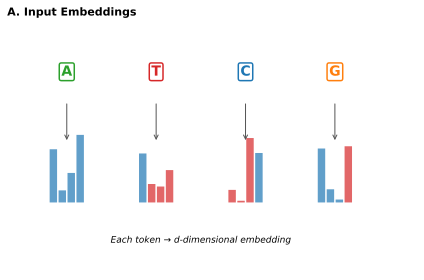
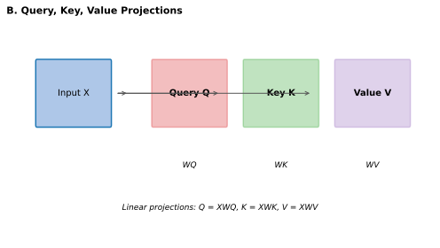
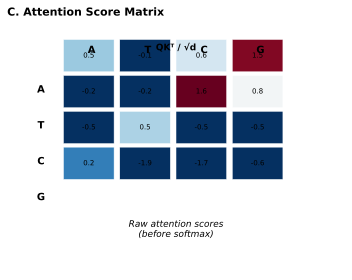
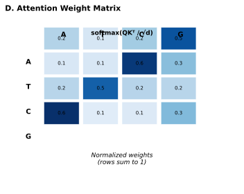
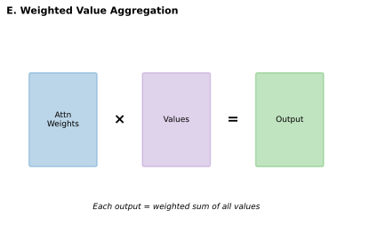
Self-attention answers this question by computing all pairwise interactions simultaneously, allowing the model to directly relate any position to any other regardless of distance. Where convolutions apply fixed filters uniformly across the sequence, attention performs dynamic routing: each position queries the entire sequence and aggregates information based on content-dependent relevance scores. The routing changes for every input because attention weights depend on what the sequence contains, not just where positions sit relative to each other. For the LMNA variant, this means the model can directly assess whether the variant position interacts with known cardiac enhancers without that signal degrading through layer after layer of local aggregation.
7.1.1 Query, Key, and Value Vectors
The next section presents the mathematical formulation of attention. The key equations are the scaled dot-product (\(\text{score}(q_i, k_j) = \frac{q_i \cdot k_j}{\sqrt{d_k}}\)) and the weighted aggregation. If you find the notation challenging, focus on the intuition: queries ask questions, keys advertise content, and values carry the actual information that flows between positions.
At each position in the input sequence, self-attention computes three vectors: a query, a key, and a value. These vectors emerge from multiplying the input embedding at that position by three learned weight matrices \(W^Q\), \(W^K\), and \(W^V\). The query represents what information this position seeks from other positions. The key represents what information this position offers to queries from elsewhere. The value represents the actual information this position contributes when attended to. This query-key-value structure separates the question of “which positions should interact” (determined by query-key similarity) from “what information flows between them” (determined by values).
Think of attention like a search engine for sequence positions. Each position issues a query describing what it’s looking for. Every position also publishes a key describing what it has to offer. The dot product between query and key measures relevance, just as a search engine ranks documents by query match. High-scoring positions then send their value (the actual content) to the querying position. The separation of key (what I advertise) from value (what I actually send) allows the same position to advertise relevance for one type of information while sending different information when attended to.
The attention mechanism computes similarity scores between each query and all keys. For position \(i\), we compute the dot product between its query \(q_i\) and every key \(k_j\) across all positions \(j = 1, \ldots, L\), where \(L\) is sequence length. These scores are scaled by \(\sqrt{d_k}\) (the square root of the key dimension) to prevent the dot products from growing large in high dimensions, which would push softmax outputs toward extreme values and create vanishing gradients:
\[ \text{score}(q_i, k_j) = \frac{q_i \cdot k_j}{\sqrt{d_k}} \]
A softmax function converts these scores into attention weights \(\alpha_{ij}\) that form a probability distribution over positions:
\[ \alpha_{ij} = \frac{\exp(\text{score}(q_i, k_j))}{\sum_{j'=1}^L \exp(\text{score}(q_i, k_{j'}))} \]
For biology readers: Softmax converts raw scores into probabilities that sum to 1:
What it does: Given a set of scores (which could be any real numbers), softmax produces positive values that sum to 1, interpretable as probabilities or weights.
The formula intuition:
- Exponentiate each score: \(\exp(\text{score})\) makes all values positive
- Divide by the sum: ensures outputs sum to 1
Example: If three positions have scores [2.0, 1.0, 0.5], softmax produces:
- Position 1: \(\exp(2.0)/(\exp(2.0)+\exp(1.0)+\exp(0.5)) \approx 0.59\)
- Position 2: \(\exp(1.0)/... \approx 0.22\)
- Position 3: \(\exp(0.5)/... \approx 0.13\)
Key properties:
- Higher scores → higher weights (exponential amplifies differences)
- All weights are positive and sum to 1
- Very high scores dominate; very low scores become negligible
In attention: Softmax turns similarity scores into “how much to pay attention to each position.” High-scoring positions receive most of the attention weight; low-scoring positions are effectively ignored.
These weights determine how strongly position \(i\) attends to each other position. High weight means position \(i\) aggregates substantial information from position \(j\); low weight means position \(j\) contributes little to the output at position \(i\). The final output at position \(i\) is a weighted sum of all value vectors:
\[ \text{output}_i = \sum_{j=1}^L \alpha_{ij} v_j \]
This weighted aggregation forms the core of self-attention. Each output position receives a mixture of information from across the entire sequence, with mixture proportions learned through backpropagation. For genomic sequences, this means a position near a splice site can attend to both the upstream exon and downstream intron, integrating context that determines whether splicing occurs. A position in a promoter can attend to distant enhancers, learning which distal elements influence expression at this gene. When predicting the pathogenicity of a variant in the SCN5A promoter (mutations in which cause Brugada syndrome and long QT syndrome, affecting approximately 1 in 2,000 individuals), the model can simultaneously consider the core promoter elements, upstream enhancers that drive cardiac-specific expression, and downstream regulatory regions that modulate expression levels.
Consider a transcription factor binding site within a promoter region.
- What kind of “query” might this position issue? (What information would help determine its regulatory function?)
- What “key” might it advertise? (What aspect of its identity is relevant to other positions?)
- What “value” might it send when attended to? (What information should flow to positions that find it relevant?)
The separation of these three roles is what gives attention its flexibility. A TATA box might query for nearby transcription start sites while advertising its identity as a core promoter element.
7.1.2 Multi-Head Attention
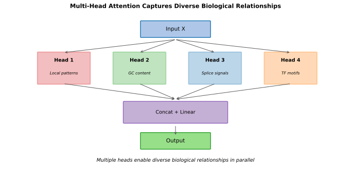
A patient presenting with a complex arrhythmia may carry variants affecting both a cardiac ion channel’s coding sequence and its distal enhancer. Understanding this case requires the model to simultaneously track local splice site context around the coding variant and enhancer-promoter relationships spanning 50 kilobases. A single attention operation cannot capture both patterns effectively: when forced to learn one pattern of position interactions, the model faces an impossible choice between attending strongly to nearby positions for local regulatory context or attending to distant positions for enhancer-gene relationships. Genomic sequences exhibit multiple types of dependencies simultaneously, and forcing all these interaction types through a single attention pattern creates destructive competition.
Multi-head attention extends the basic mechanism by running multiple attention operations in parallel, each with independent learned projections (Vaswani et al. 2023). If we use H heads, we split the model dimension d into H subspaces of dimension d/H, compute separate queries, keys, and values for each head, run attention independently, concatenate outputs, and project back to dimension d. Different heads can specialize in different interaction types without competing for attention capacity.
In genomic models, one head might attend to nearby positions (capturing local motif context) while another attends to positions at characteristic distances (capturing nucleosome spacing or enhancer-promoter loops). Empirical analysis of trained genomic transformers reveals diverse attention patterns: some heads attend locally regardless of content, others attend to specific sequence motifs like TATA boxes or CTCF binding sites, and still others show distance-dependent patterns suggestive of chromatin organization (Avsec et al. 2021). This specialization emerges from training without explicit supervision, reflecting the model’s discovery that different types of interactions require different aggregation patterns. Methods for visualizing and interpreting these learned attention patterns are examined in Chapter 25.

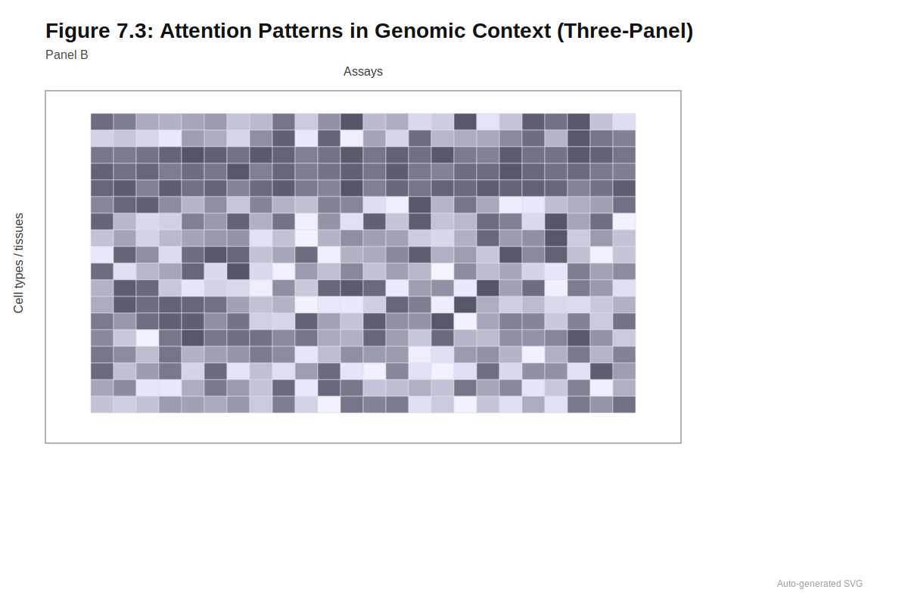
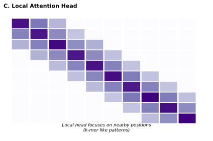
Multi-head attention is not just about capacity; it is about division of labor. Different heads learn to track different biological relationships:
- Local heads capture motif context and nearby regulatory grammar
- Periodic heads may learn nucleosome spacing (~147 bp) or helical periodicity (~10.5 bp)
- Long-range heads capture enhancer-promoter interactions across tens of kilobases
- Motif-specific heads attend selectively to known binding sites (CTCF, TATA)
This specialization emerges without supervision. The model discovers that genomic function depends on multiple relationship types operating simultaneously.
The multi-head structure also provides redundancy that aids training. If one head fails to learn useful patterns, others can compensate. Gradient flow through multiple parallel paths stabilizes optimization. For genomic applications where training data may be limited compared to natural language corpora, this redundancy helps prevent individual heads from overfitting to spurious correlations. The number of heads represents a design choice: too few heads limit the diversity of learnable patterns, while too many heads reduce the dimensionality available to each head, potentially limiting their individual expressiveness. Most genomic transformers use 8 to 16 heads, balancing diversity against per-head capacity.
7.2 Positional Encoding
A patient with hypertrophic cardiomyopathy carries a variant in the MYH7 gene’s promoter region. Determining pathogenicity requires knowing precisely where the variant sits relative to the transcription start site: a variant at position -30 (where the TATA box resides) carries entirely different implications than the same sequence at position +500 (within the 5’ UTR). Position is not merely bookkeeping for genomic sequences; it encodes biological function. The canonical TATA box must appear 25 to 30 base pairs upstream of transcription initiation to function; the same sequence elsewhere carries no regulatory significance. Splice site recognition depends on the invariant GT and AG dinucleotides appearing at precise distances from exon boundaries. Enhancer-promoter interactions require specific distance relationships that vary by locus and cell type. A model that cannot distinguish position 100 from position 10,000 cannot learn the positional grammar that governs gene regulation.
Self-attention, by design, computes interactions based purely on content: the attention weight between positions depends only on their query and key vectors, not on where they sit in the sequence. The basic concepts of position encoding were introduced in Section 5.6.1; here we examine the specific implementations that transformer architectures employ. Shuffling input token order changes nothing about how attention weights are computed. The model has no inherent notion of sequence order, a property called permutation invariance. For genomic data where position matters fundamentally, this blindness to order would be catastrophic. DNA has 5’ to 3’ directionality that determines transcription direction. Distance from transcription start sites determines promoter versus enhancer classification. Strand orientation distinguishes sense from antisense transcription. Positional encodings inject information about token positions into the model, breaking permutation invariance by making the model aware of where each token sits in the sequence.
Before reading about specific positional encoding methods, consider these questions:
- A TATA box sequence (TATAAA) appears at two locations: 28 bp upstream of a transcription start site, and 5,000 bp upstream. Should the model treat these identically?
- An enhancer-promoter interaction works when the enhancer is 50 kb upstream but not when it is 500 kb upstream. What does the model need to learn about distance?
- If you were designing a positional encoding for genomic sequences, would you encode absolute positions (position 1, 2, 3…) or relative distances between positions? What are the tradeoffs?
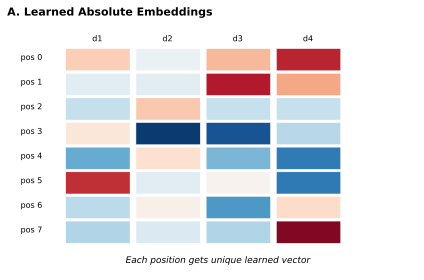
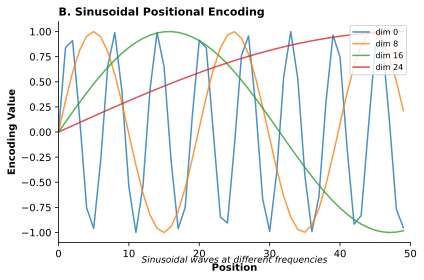
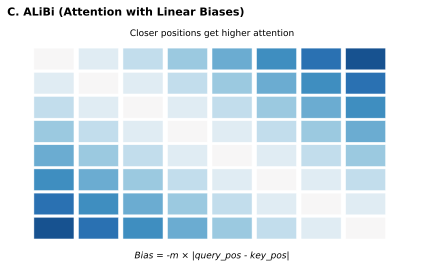
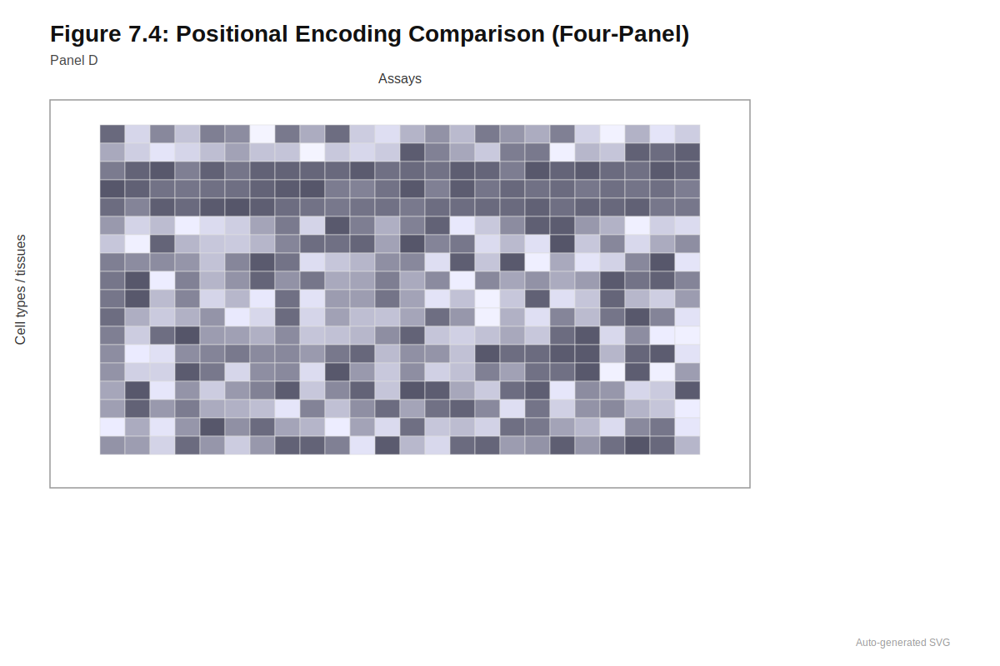
7.2.1 Absolute Position Encodings
The sinusoidal positional encoding formulas below may appear complex. The key intuition is that different dimensions of the encoding oscillate at different frequencies, creating a unique “fingerprint” for each position. Low-frequency components indicate coarse position (beginning vs. end of sequence), while high-frequency components indicate fine position (exact nucleotide location).
The original transformer used sinusoidal functions with different frequencies for each embedding dimension (Vaswani et al. 2023). For position \(pos\) and dimension \(i\):
\[ \text{PE}(pos, 2i) = \sin\left(\frac{pos}{10000^{2i/d_\text{model}}}\right) \]
\[ \text{PE}(pos, 2i+1) = \cos\left(\frac{pos}{10000^{2i/d_\text{model}}}\right) \]
These fixed patterns have useful properties. They are deterministic (the same for all sequences), allow the model to learn to attend by relative positions (since \(\mathrm{PE}(pos+k)\) can be expressed as a linear function of \(\mathrm{PE}(pos)\)), and generalize to sequence lengths not seen during training. The different frequencies across dimensions create a unique “fingerprint” for each position: lower-frequency components capture coarse position while higher-frequency components capture fine position.
Many genomic models use learned positional embeddings instead: lookup tables where each position has a learned vector added to the input embedding. DNABERT and Nucleotide Transformer both employ learned positional embeddings, allowing the model to discover position-dependent patterns specific to genomic data (Ji et al. 2021; Dalla-Torre et al. 2023). The trade-off is that learned embeddings do not automatically extrapolate to longer sequences. A model trained with maximum sequence length of 512 tokens has no learned embedding for position 513, creating a hard boundary on sequence length at inference time. This fixed maximum context proves particularly restrictive for genomics, where biological phenomena span scales from individual binding sites to megabase regulatory domains.
7.2.2 Relative Position Encodings
Absolute encodings treat position 1,000 and position 1,001 as having different representations even though their relative relationship (adjacent positions) may matter more than their absolute locations. For genomic applications, relative distance often carries more biological meaning than absolute coordinates: nucleosomes are spaced approximately 200 base pairs apart regardless of genomic location, and enhancer-promoter interactions depend on distance rather than absolute position. A transcription factor binding site 50 bases upstream of a transcription start site has similar effects whether the TSS sits at genomic position 1,000 or 1,000,000. Relative positional encodings address this by encoding distances between positions rather than absolute coordinates.
T5-style relative position bias adds a learnable scalar to attention scores based on the distance between query and key positions (Raffel et al. 2023). This bias helps the model learn that nearby positions often interact more strongly than distant ones while remaining agnostic about absolute position. The learned biases can capture genomic-specific distance preferences, such as the characteristic spacing of regulatory elements or the periodicity of nucleosome positioning.
Extrapolation to longer sequences than seen during training poses a persistent challenge for learned position embeddings. A model trained on 1-kilobase sequences may behave unpredictably when asked to process 10-kilobase sequences at inference, since the position embeddings for distant positions were never optimized. Attention with Linear Biases (ALiBi) addresses this limitation by adding a fixed linear penalty to attention scores based on distance, without learned parameters (Press, Smith, and Lewis 2022). For a head with slope \(m\), attention between positions separated by distance \(|i - j|\) is penalized by \(m|i - j|\). Different heads use different slopes, encouraging some to focus locally and others globally. Because the linear penalty extrapolates naturally, ALiBi generalizes well beyond training lengths, making it attractive for genomic applications where sequence length varies dramatically. The linear distance penalty may not perfectly capture biological relationships (where some regulatory interactions span consistent long distances while others operate locally), but the simplicity and extrapolation properties have proven valuable.
An alternative approach encodes position through geometric transformation rather than additive bias. Rotary Position Embeddings (RoPE) multiply query and key vectors by rotation matrices whose angles depend on position (Su et al. 2024). The dot product between rotated query and key then depends on their relative distance, combining benefits of relative encoding with efficient implementation. RoPE has become standard in recent large language models and appears increasingly in genomic transformers, including variants of Nucleotide Transformer, offering a balance between the flexibility of learned embeddings and the extrapolation capability of fixed schemes. The choice between ALiBi and RoPE often depends on whether the application prioritizes aggressive length extrapolation (favoring ALiBi) or compatibility with pretrained language model architectures (favoring RoPE).
The following table summarizes the key tradeoffs among positional encoding approaches:
| Encoding Type | How Position is Encoded | Length Extrapolation | Genomic Models Using It |
|---|---|---|---|
| Sinusoidal (fixed) | Sine/cosine at different frequencies | Good | Original Transformer |
| Learned absolute | Lookup table per position | Poor (hard limit) | DNABERT, Nucleotide Transformer |
| T5-style relative | Learned bias by distance | Moderate | Some genomic variants |
| ALiBi | Linear attention penalty by distance | Excellent | Long-context models |
| RoPE | Query/key rotation by position | Good | NT-v2, recent LLMs |
7.2.3 Genomic Position Considerations
Genomic sequences impose requirements on positional encoding beyond what natural language demands. DNA has strand directionality: ACGT on the forward strand has different regulatory meaning than the same sequence on the reverse strand. Positional encodings should enable the model to learn strand-specific patterns. Some genomic transformers encode both strands separately and combine predictions; others rely on the model learning strand orientation from sequence content alone.
Genomic coordinates pose another design choice. Should position 1 correspond to a fixed genomic landmark (transcription start site, gene start) or simply indicate sequence order without biological reference? Models predicting regulatory activity often center sequences on promoters, using positions relative to the TSS. Foundation models trained on random genomic segments typically use positional encodings reflecting sequence order without genomic coordinate reference. The choice affects what the model can learn: TSS-relative positions enable learning of distance-dependent regulatory patterns, while sequence-order positions require the model to learn these patterns implicitly from content.
Absolute genomic coordinates carry accumulated knowledge with no linguistic analog. The position chr17:41,276,045 indexes decades of clinical observations, population frequencies, and functional studies that inform variant interpretation before a model processes a single nucleotide. Some recent models have explored incorporating these absolute coordinates, allowing models to learn position-specific patterns like centromeric sequences or telomeric regions. Circular genomes like mitochondrial DNA and bacterial chromosomes create additional complexity: they have no beginning or end, creating wraparound relationships that linear position encodings cannot naturally represent. These adaptations illustrate that position encoding is not merely a technical detail but a design choice shaping what biological patterns a model can capture.
The choice of positional encoding interacts with tokenization strategies (see Chapter 5). K-mer tokenization reduces sequence length (and thus attention cost) but changes what “position” means: position 1 might represent nucleotides 1 through 6 rather than a single base. A model using 6-mer tokens with learned positional embeddings learns different position-dependent patterns than one using single-nucleotide tokens, even if both cover the same genomic region.
7.3 Transformer Block
A clinician interpreting a BRCA1 variant needs a model that does more than identify isolated motifs or single long-range interactions. The variant’s pathogenicity depends on how multiple regulatory signals integrate: local splice site grammar, enhancer contacts from 20 kilobases upstream, and transcription factor binding sites whose effects depend on chromatin context. Single attention layers identify pairwise relationships, but understanding complex regulatory logic requires building hierarchical representations where simple patterns combine into compound signals. This hierarchical integration emerges from stacking transformer blocks, the modular units that combine attention and nonlinear processing to build increasingly abstract representations through repeated application.
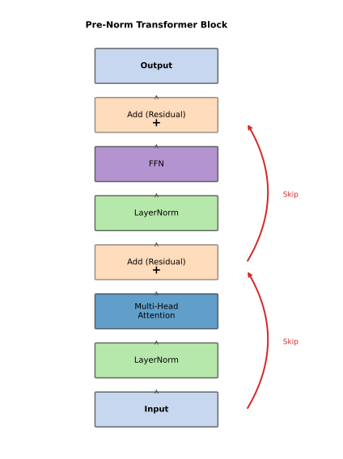
7.3.1 Block Components
Each transformer block accomplishes two distinct functions: enabling positions to share information across the sequence, and transforming that aggregated information through nonlinear processing. The multi-head self-attention layer handles global communication, allowing each position to gather information from the entire sequence. The position-wise feed-forward network processes each position independently, applying nonlinear transformations to the aggregated information. Separating these functions into distinct components allows each to be optimized independently and provides clear computational semantics: attention determines which positions are relevant to each other (the “what to consider” question), while the feed-forward network determines how to combine that information (the “what to conclude” question).
The transformer block’s two-stage design reflects a fundamental separation of concerns:
- Attention: “Which other positions should I consider?” (inter-position communication)
- Feed-forward: “Given what I’ve gathered, what should I conclude?” (per-position computation)
This separation explains why transformers can be so effective: attention handles the variable-length, content-dependent routing problem, while feed-forward networks handle the fixed-size, position-local computation problem. Each component can be optimized for its specific role.
The feed-forward network consists of two linear transformations with a nonlinearity between them. Typically, this expands the dimension by a factor of four (from model dimension d to 4d), applies GELU or similar activation, then projects back to dimension d. This expansion allows processing through a high-dimensional nonlinear transformation before producing output for the next layer. The position-wise nature means each position is transformed identically but independently; cross-position information flows only through attention.
Deep transformer networks would be untrainable without mechanisms to stabilize gradient flow. Layer normalization addresses activation scale by normalizing across the feature dimension at each position, preventing the explosive growth or collapse of activations that would otherwise occur across dozens of layers. Two conventions exist for placement: post-norm applies normalization after each sublayer, while pre-norm applies it before. Pre-norm has become standard because it improves training stability for deep networks, though post-norm can achieve slightly better final performance with careful tuning (Xiong et al. 2020).
Normalization alone cannot solve the vanishing gradient problem that plagues deep networks. Residual connections provide the second essential stabilization mechanism by adding each sublayer’s input directly to its output, creating gradient highways that bypass the transformations within attention and feed-forward operations. These connections serve two critical functions. First, they allow gradients to flow directly through many layers without repeated transformation, enabling training of very deep networks. Second, they create an inductive bias toward incremental refinement: each layer makes small adjustments to the representation rather than constructing entirely new representations from scratch. For genomic models, this incremental refinement maps naturally onto biological interpretation, where early layers might identify motifs, middle layers might recognize motif combinations, and later layers might integrate these patterns into regulatory predictions.
7.3.2 Information Flow and Depth
The flow through a pre-norm transformer block proceeds as follows. Input X is normalized, processed by multi-head attention to produce X’, and added back via residual connection, yielding X + X’. This sum is normalized, passed through the feed-forward network to produce X’’, and added via another residual connection, yielding final output X + X’ + X’’. Each layer thus adds refinements to the representation while preserving information from earlier processing.
Stacking depth determines how many times this refinement occurs. Shallow transformers (6 layers or fewer) are parameter-efficient but may lack capacity for complex hierarchical patterns. Deep transformers (12 to 24 layers) can learn sophisticated representations that capture how promoter elements, enhancer contacts, and chromatin state combine to determine expression. Most genomic transformers use 6 to 24 layers, varying by application. Models for short sequences (small RNAs, individual binding sites) might use fewer layers, while foundation models for long genomic contexts often use deeper stacks to build representations that integrate information across multiple biological scales.
The choice of depth balances capacity against trainability. Deeper networks learn more complex functions but are harder to optimize, prone to overfitting without sufficient data, and more expensive at training and inference. For genomic models, depth often correlates with the complexity of patterns being modeled. Simple motif recognition tasks might benefit more from wider layers (larger d) than deeper stacks, while tasks requiring hierarchical integration (understanding how promoter-enhancer-insulator relationships determine expression) may benefit from additional depth that builds increasingly abstract representations layer by layer.
Test your understanding of transformer block architecture:
- What are the two main components of a transformer block, and what does each do?
- Why do residual connections enable training of deep networks?
- If a model has 12 layers with 8 attention heads each, how many different attention patterns can it learn?
- What is the difference between pre-norm and post-norm layer placement?
Answers: (1) Multi-head attention for inter-position communication; feed-forward network for per-position computation. (2) Residual connections create gradient highways that allow signals to flow directly through many layers without degradation. (3) 96 different attention patterns (12 layers x 8 heads). (4) Pre-norm normalizes before each sublayer (more stable training); post-norm normalizes after (potentially better final performance but harder to train).
7.4 Scaling to Genomic Sequences
A 52-year-old patient presents with unexplained cardiomyopathy, and whole-genome sequencing reveals a structural variant spanning 500 kilobases on chromosome 14, disrupting the MYH7 locus and several upstream regulatory elements. The clinical team needs to assess whether this variant explains the patient’s phenotype. Standard transformers cannot help: the quadratic complexity of self-attention makes 500-kilobase contexts computationally intractable. This gap between clinical need and computational capability defines a central challenge for genomic AI. The attention mechanism enables long-range modeling in principle, but practical constraints on memory and computation limit what contexts can actually be processed. Effective application of transformers to genomics requires strategies for managing these constraints.
7.4.1 Quadratic Barrier
Computing all pairwise attention scores requires \(O(L^2)\) operations, where L is sequence length. For a 10-kilobase sequence tokenized at single-nucleotide resolution, this means 100 million attention computations per layer. A 200-kilobase sequence requires 40 billion computations per layer. Memory requirements scale similarly because the attention matrix must be stored for backpropagation.
This scaling constraint directly limits what clinical questions transformers can address. The HLA region (critical for transplant matching and autoimmune disease risk in the approximately \(40{,}000\) organ transplants performed annually in the United States) spans approximately \(4\) megabases and contains the most polymorphic genes in the human genome. Modeling this region with standard self-attention would require \(16 \times 10^{12}\) attention computations per layer, far exceeding practical limits. Structural variant detection often requires analyzing megabase-scale contexts to identify breakpoints and assess functional impact, yet these contexts remain computationally intractable for standard transformers. A patient with a suspected chromosomal translocation cannot benefit from transformer-based analysis when the relevant context exceeds computational capacity.
7.4.2 Parameter Considerations
The number of parameters a transformer can effectively utilize depends on both training data quantity and the complexity of patterns to be learned. Transformer parameters come primarily from two sources. Width (model dimension d) determines embedding and hidden state sizes; increasing width allows more complex pattern representation at each position but increases parameters quadratically because weight matrices scale as d × d. Depth (number of layers) determines how many refinement steps occur; increasing depth allows hierarchical abstractions through repeated processing but increases parameters linearly.
Scaling laws from natural language processing suggest performance improves smoothly with increased parameters, data, and compute (Kaplan et al. 2020). Similar principles apply to genomics, though optimal ratios may differ. Genomic sequences are less compressible than natural language: each nucleotide carries less predictable information than words in structured sentences. The entropy of DNA sequence is higher than English text, meaning more parameters may be needed to model the same sequence length. This asymmetry suggests genomic models might benefit relatively more from depth (more processing of high-entropy information) than from width (more dimensions per position when each position carries limited structure).
The architectural landscape of genomic foundation models reveals distinct design philosophies. Table 7.1 compares representative models across key architectural dimensions, illustrating how different approaches balance model capacity, context length, and computational efficiency.
| Model | Architecture | Width (d) | Depth (Layers) | Heads | Parameters | Context |
|---|---|---|---|---|---|---|
| DNABERT | Encoder-only | 768 | 12 | 12 | 110M | ~0.5 kb |
| DNABERT-2 (zhou_dnabert2_2024?) | Encoder-only | 768 | 12 | 12 | 117M | Variable |
| Nucleotide Transformer (500M) | Encoder-only | 1,024 | 24 | 20 | 500M | 6 kb |
| Nucleotide Transformer (2.5B) | Encoder-only | 2,560 | 32 | 20 | 2.5B | 6 kb |
| NT-v2 (250M) | Encoder-only | — | — | — | 250M | 12 kb |
| HyenaDNA | Hyena stack | 128–256 | 2–8 | — | 0.4M–6.6M | up to 1M bp |
| Caduceus | BiMamba | 256 | 16 | — | ~7M | 131 kb |
| Evo 2 (7B) | StripedHyena 2 | — | — | — | 7B | 1M bp |
| Evo 2 (40B) | StripedHyena 2 | — | — | — | 40B | 1M bp |
Several patterns emerge from this comparison. First, traditional transformer-based models like DNABERT and Nucleotide Transformer inherit architectures closely resembling their NLP counterparts, with DNABERT using the same 12-layer, 768-dimension configuration as BERT-base (Ji et al. 2021). The Nucleotide Transformer family scales this approach, with the 500M variant using 24 layers and 20 attention heads, and the 2.5B variant expanding to 32 layers while maintaining the same head count (Dalla-Torre et al. 2023). This scaling primarily increases width (hidden dimension grows from 1,024 to 2,560) rather than dramatically increasing depth, following conventional transformer scaling practices.
Second, models designed for long-range genomic modeling adopt fundamentally different architectures to circumvent attention’s quadratic complexity. HyenaDNA replaces attention entirely with implicit long convolutions, achieving million-base-pair contexts with models containing only 2 to 8 layers and a few million parameters (Nguyen et al. 2023). Caduceus extends the Mamba state-space architecture with bidirectional processing and reverse-complement equivariance, using 16 layers to achieve 131 kb context (Schiff et al. 2024). Evo 2 represents the current frontier, with 7B and 40B parameter variants achieving million-token context through the StripedHyena 2 architecture (Brixi et al. 2025). These non-transformer approaches demonstrate that architectural innovation can achieve genomic-scale context lengths that remain computationally intractable for standard attention mechanisms.
Third, the relationship between parameter count and context length is not straightforward. HyenaDNA achieves the longest context among early models (1 million bp) with fewer than 7 million parameters, while Nucleotide Transformer 2.5B processes only 6 kb despite 400 times more parameters. This inversion reflects a fundamental tradeoff: dense attention captures rich pairwise interactions but scales poorly with sequence length, while subquadratic alternatives like Hyena operators and state-space models sacrifice some interaction modeling capacity for computational tractability. The optimal choice depends on whether the task requires capturing dense local interactions or sparse long-range dependencies.
The relationship between parameter count and downstream task performance is not always monotonic: a well-trained smaller model can outperform a poorly trained larger one, and task-specific fine-tuning often matters more than pretraining scale for focused clinical applications. Nucleotide Transformer v2 demonstrated this principle dramatically, achieving comparable or superior performance to the 2.5B-parameter v1 models with only 250M parameters by incorporating architectural improvements and training for more tokens (Dalla-Torre et al. 2023). Similarly, HyenaDNA achieves state-of-the-art results on 12 of 18 benchmarks from the Nucleotide Transformer suite while using 1,500 times fewer parameters. These results suggest that architectural efficiency and training strategy may matter as much as raw parameter count for genomic applications.
7.4.3 Context Length Strategies
Standard self-attention’s \(O(L^2)\) complexity becomes prohibitive for long genomic contexts, forcing architectural choices that trade expressiveness for tractability. The strategies employed reflect different assumptions about which interactions matter most for genomic modeling.
The quadratic complexity of full attention becomes prohibitive for genomic sequences, but different applications tolerate different trade-offs between efficiency and expressiveness. When most relevant interactions are local (as often holds for regulatory sequences where nearby elements interact more strongly than distant ones), restricting attention to fixed windows reduces complexity to \(O(Lw)\) where w is window size. For clinical variant interpretation in coding sequences, where splice sites and reading frame context typically lie within a few hundred bases, local attention may capture the relevant biology. The trade-off is missing long-range interactions that fall outside windows, potentially critical for understanding distal enhancer effects or structural variant consequences.
Hierarchical approaches recover some long-range capability while maintaining efficiency. Lower layers can use local windows to capture fine-grained patterns, while upper layers attend to every \(k\)-th position to capture global structure. Hybrid models like Enformer apply CNNs to downsample sequences before transformer layers, reducing the effective sequence length that attention must handle (Avsec et al. 2021). A 200-kilobase genomic region might be compressed to roughly 1,500 positions after CNN processing, making full attention tractable at the cost of single-nucleotide resolution in transformer layers.
Mathematical approximations offer yet another path, preserving dense connectivity while reducing computational cost. Linformer approximates the attention matrix through low-rank decomposition, reducing complexity to linear in sequence length (Wang et al. 2020). Performer uses random feature methods to approximate attention scores without explicitly computing the full \(L\timesL\) matrix (Choromanski et al. 2022). These approximations trade some expressiveness for efficiency and may miss certain long-range dependencies that low-rank structure cannot capture. The choice among sparse patterns, hierarchical designs, and mathematical approximations depends on whether the target biology demands single-nucleotide resolution, long-range connectivity, or both.
When selecting a context length strategy for a genomic application, consider:
Use local/windowed attention when: - The biological signal is primarily local (splice sites, TF binding sites) - Single-nucleotide resolution is critical - Training data is limited
Use hierarchical/hybrid approaches when: - You need both local detail and long-range context - The regulatory architecture involves enhancer-promoter interactions - You can tolerate some loss of fine-grained resolution
Use subquadratic architectures (Hyena, Mamba) when: - Context length is the primary constraint (>100 kb) - You need single-nucleotide resolution over long ranges - You’re willing to adopt newer, less mature architectures
7.4.4 Memory and Precision
Memory requirements compound computational challenges for genomic transformers. Training requires storing activations for backpropagation, and attention matrices are particularly memory-intensive. A \(100\)-kilobase sequence with \(16\) attention heads and \(12\) layers requires storing \(16 \times 12 \times 100{,}000 \times 100{,}000\) attention weights, approximately \(2\) terabytes at \(32\)-bit precision before considering other activations.
Memory constraints often limit model size and sequence length more than computational budget. Recomputing activations during the backward pass rather than storing them (a technique called gradient checkpointing) trades additional computation for reduced memory footprint, enabling training of larger models or longer sequences on fixed hardware at the cost of 20 to 30 percent additional training time. Further memory savings come from reducing numerical precision: using 16-bit floating point for most computations while maintaining 32-bit precision for critical operations like loss computation and optimizer updates. Modern GPUs accelerate 16-bit arithmetic substantially, providing near 2x speedup with minimal precision loss. Flash Attention implements memory-efficient attention computation that avoids materializing the full attention matrix, enabling longer contexts within fixed memory budgets (Dao et al. 2022). Together, these optimizations determine the practical limits of what can be trained on available hardware.
7.5 Architectural Variants for Genomics
Foundation model architectures encode assumptions about what matters. A model optimized for scoring existing variants differs fundamentally from one designed to generate novel sequences, which differs again from one predicting molecular interactions. The choice of architecture shapes what questions can be asked.
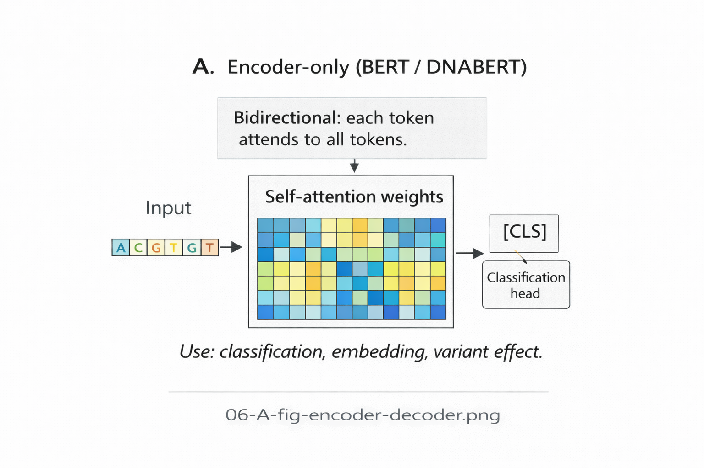
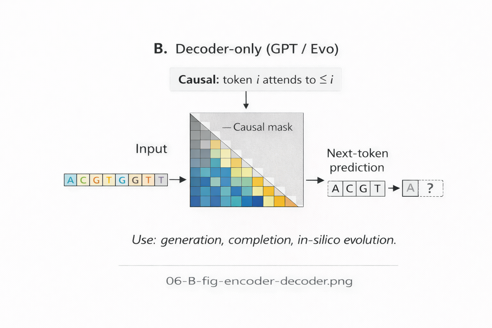
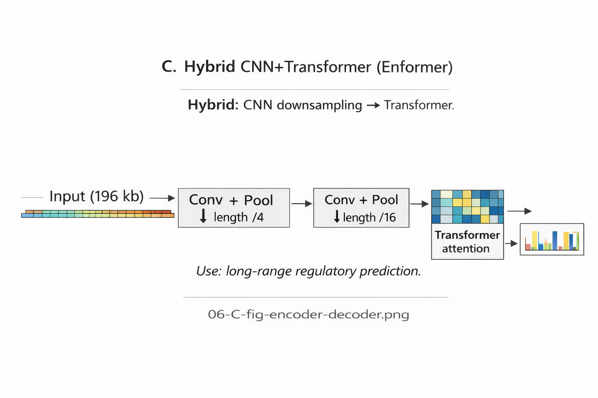
7.5.1 Encoder-Only Transformers
When a clinical laboratory queries a pathogenicity database for a novel missense variant, they need a model that integrates information from the entire protein sequence: upstream domains that establish structural context, downstream regions that complete functional units, and evolutionary patterns that distinguish tolerated from deleterious changes. Encoder-only transformers process sequences bidirectionally, allowing each position to attend to all other positions including those that follow in the sequence. This bidirectional context produces richer representations than unidirectional processing because each position’s representation incorporates information from the entire sequence.
DNABERT exemplifies this architecture, trained with masked language modeling objectives where random tokens are masked and predicted from bidirectional context (Ji et al. 2021). The model learns to predict held-out k-mers based on surrounding sequence, implicitly learning sequence patterns and constraints that transfer to downstream tasks. Nucleotide Transformer follows similar principles at larger scale (Dalla-Torre et al. 2023). These models excel at representation learning: producing embeddings that capture biological properties useful for variant effect prediction, function classification, or other tasks that require fixed-length representations of variable-length sequences.
Bidirectional attention suits tasks where both upstream and downstream context matters for understanding a position. Transcription factor binding depends on flanking sequence in both directions. Splice site recognition requires seeing both exonic and intronic context. Variant pathogenicity may depend on protein domain context from both N-terminal and C-terminal directions. The limitation is that encoder-only architectures cannot generate sequences autoregressively because they require seeing the full sequence to produce any output; they answer “what does this sequence mean” rather than “what sequence should come next.”
7.5.2 Decoder-Only Transformers
Generating synthetic genomic sequences for therapeutic design, creating diverse antibody libraries for drug discovery, or sampling from learned regulatory grammars all require models that produce sequences one token at a time. Decoder-only transformers use causal attention where each position attends only to itself and preceding positions. This structure enables autoregressive generation: the model produces sequences one token at a time, conditioning each new token on all previous tokens.
GenSLM applies this architecture to genomic data, training on next-token prediction to learn sequence distributions (Zvyagin et al. 2022). The model learns to predict the next nucleotide or \(k\)-mer given all preceding context, implicitly learning the statistical regularities of genomic sequence. This objective aligns naturally with generation tasks: sampling proceeds by repeatedly predicting the next token and appending it to the sequence. Causal attention is essential for generation because the model must produce each position before it can condition subsequent positions on that output.
The trade-off is that causal attention produces less rich representations for fixed sequences because each position sees only partial context. Position 100 in a 1000-position sequence has access to only the first 100 positions, not the remaining 900 that might provide relevant information. For variant effect prediction where downstream context matters, this limitation can be substantial. The choice between encoder and decoder architectures reflects a fundamental tension: representation learning benefits from bidirectional context, while generation requires causal structure.
7.5.3 Encoder-Decoder Transformers
Some genomic tasks require transforming one sequence into another of different length or structure. Predicting protein sequence from coding DNA, generating variant descriptions from sequence context, or translating between sequence representations all involve input-output relationships that neither pure encoder nor pure decoder architectures handle naturally. Encoder-decoder architectures combine bidirectional encoding with autoregressive decoding (Vaswani et al. 2023).
The encoder processes an input sequence with full bidirectional attention, producing contextualized representations. The decoder then generates output tokens autoregressively, attending both to its own previous outputs (through causal self-attention) and to encoder representations (through cross-attention). This cross-attention allows each decoder position to query the full encoded input when generating output, combining the benefits of bidirectional understanding with autoregressive generation.
Encoder-decoder models are less common in genomic applications than encoder-only or decoder-only variants because most genomic tasks either need representations (favoring encoders) or generation (favoring decoders), not both simultaneously. Machine translation exemplifies the encoder-decoder use case: encode a sentence in one language, decode into another. Genomic analogs might include predicting protein sequences from codon-optimized DNA or generating clinical variant reports from sequence features, but these applications remain less developed than pure representation or generation tasks.
The following table summarizes when to use each architectural variant:
| Architecture | Attention Pattern | Optimal Use Cases | Example Models |
|---|---|---|---|
| Encoder-only | Bidirectional (full) | Variant effect prediction, sequence classification, embedding extraction | DNABERT, Nucleotide Transformer, ESM-2 |
| Decoder-only | Causal (triangular) | Sequence generation, design, sampling from learned distributions | GenSLM, Evo, GPT-style models |
| Encoder-decoder | Bidirectional + causal | Sequence-to-sequence tasks, translation, structured output | Machine translation models |
| Hybrid (CNN + transformer) | Hierarchical | Long-context regulatory prediction with downsampling | Enformer, Borzoi |
7.5.4 Hybrid CNN-Transformer Models
The most successful genomic transformers combine convolutional and attention mechanisms rather than using transformers alone. This hybrid approach exploits CNNs’ efficiency for local pattern extraction while using transformers for long-range integration, matching the multi-scale structure of genomic regulation where both local motifs and distal interactions determine function.
Enformer and Borzoi apply convolutional stems to long sequences, downsampling through pooling, then pass compressed representations through transformer layers (Avsec et al. 2021; linder_borzoi_2023?). The CNN layers handle motif recognition, nucleosome positioning signals, and local chromatin features with parameter efficiency that pure transformers cannot match. Transformer layers then integrate across the broader regulatory landscape, learning enhancer-promoter relationships and TAD boundary effects. This division of labor achieves state-of-the-art performance on regulatory prediction tasks while remaining computationally tractable for 200-kilobase contexts. The regulatory sequence models in Chapter 16 examine Enformer and Borzoi comprehensively, including their applications to variant effect prediction and expression modeling.
The hybrid approach also addresses the quadratic attention bottleneck indirectly. By downsampling sequences before transformer layers (often by factors of 128 or more), hybrids reduce effective sequence length and thus attention cost. A 200-kilobase genomic region compressed to 1,500 positions requires only 2.25 million attention computations per layer rather than 40 billion for the uncompressed sequence. The cost is loss of single-nucleotide resolution in transformer layers, though the CNN stem preserves local detail that attention layers integrate but do not need to resolve. Chapter 16 examines Enformer and related hybrid architectures in detail.
7.6 Training Dynamics
When a model trained to predict pathogenic variants misclassifies a disease-causing BRCA1 mutation as benign, the consequences extend beyond benchmark metrics. Clinical laboratories may return incorrect results; patients may forego preventive surgeries that could save their lives. Training failures matter clinically because they determine what models learn and what they miss. The evaluation methodology in Chapter 12 examines how to detect such failures before clinical deployment, while Chapter 13 addresses systematic biases that cause models to fail on clinically important subgroups. A model that overfits to common polymorphisms in training data will fail on the rare variants that matter most for diagnosis. A model whose gradients vanish during training will never learn the subtle regulatory patterns that distinguish pathogenic from benign promoter variants. Understanding training dynamics helps predict and prevent these failures.
7.6.1 Optimization
Genomic transformers inherit their training foundations from natural language processing but require adjustments for biological data. The Adam optimizer and its variant AdamW remain standard, using adaptive learning rates that maintain per-parameter estimates adjusted based on gradient statistics (Loshchilov and Hutter 2019). AdamW applies weight decay directly to parameter updates rather than to the loss function, improving generalization and training stability.
Learning rate schedules typically use warmup (linearly increasing learning rate from near-zero to peak over the first several thousand steps) followed by decay (linear or cosine decrease over the remaining training). Warmup addresses a specific instability: transformers with random initialization can produce extreme gradients early in training, and adaptive optimizers need time to build accurate gradient statistics. Warmup allows the optimizer to stabilize before applying full learning rates. Skipping warmup often causes training collapse in the first few hundred steps, manifesting as loss spikes or NaN values.
For genomic data, learning rate tuning may require adjustment from NLP defaults. Regulatory sequences with highly conserved motifs (TATA boxes, splice site dinucleotides) create strong signals that models can overfit quickly; lower learning rates may prevent latching onto these patterns before learning subtler regulatory grammar. Protein sequences exhibit weaker positional conservation than regulatory DNA, potentially benefiting from higher rates that encourage broader exploration of the loss landscape. Empirically, genomic transformers often use peak learning rates of 1e-4 to 5e-4 (Avsec et al. 2021), somewhat lower than the 1e-3 to 3e-3 common in language modeling.
7.6.2 Regularization
Regularization prevents overfitting, particularly important when training data is limited relative to model size. Genomic datasets, while growing rapidly, remain smaller than the trillion-token corpora used for large language models. A model with 100 million parameters trained on 10 billion nucleotides faces different overfitting risks than one trained on 1 trillion tokens.
Transformers’ high parameter counts create substantial overfitting risk, particularly for genomic applications where labeled training data may be limited. Two complementary regularization strategies have proven essential. Randomly zeroing activations during training (dropout) forces the network to learn robust features that remain informative even when some information pathways are blocked. Applying dropout to attention weights specifically prevents over-reliance on particular position pairs, encouraging distributed representations. Genomic transformers, like DNABERT, use standard dropout rates of 0.1 to 0.2.
Constraining parameter magnitudes provides orthogonal regularization. Weight decay penalizes large parameter values, encouraging smaller weights that generalize better to unseen data. For transformers, this penalty is typically applied to all parameters except biases and layer normalization parameters. The coefficient requires careful tuning: too little provides insufficient regularization; too much constrains capacity and reduces model expressiveness. Values of 0.01 to 0.1 are common, with higher values for smaller datasets where overfitting risk is greater. The interaction between dropout and weight decay means that optimal settings for each depend on the other, requiring joint tuning rather than independent optimization.
7.6.3 Gradient Stability
Gradient issues plague deep network training and require specific attention for genomic transformers. Vanishing gradients occur when gradients become extremely small through many layers, preventing learning in early layers. Exploding gradients are the opposite: gradients grow exponentially and destabilize training. Transformers mitigate vanishing gradients through residual connections that provide direct gradient paths, allowing gradients to flow from output to early layers without passing through potentially attenuating transformations. Exploding gradients are addressed through gradient clipping, which rescales gradients when their norm exceeds a threshold.
For genomic transformers, gradient issues manifest differently than in language models. Natural language has nested grammatical organization (words form phrases, phrases form clauses, clauses form sentences), and this hierarchy creates structural landmarks that concentrate attention on syntactically meaningful positions. Genomic sequences lack equivalent organization: functional elements like promoters, splice sites, and enhancers are scattered without consistent positional relationships, so attention patterns must be learned entirely from data without structural priors to guide gradient flow. This absence of hierarchy interacts with imbalanced token frequencies to compound the problem. Common k-mers receive large gradients from frequent occurrence while rare but biologically important tokens (such as k-mers containing the stop codon TAG) receive small gradients from infrequent appearance. In language, frequent function words are grammatically constrained in their attention patterns; in genomic sequences, common k-mers have no such constraints, allowing their gradients to dominate through frequency alone rather than biological importance. Addressing these imbalances may require loss reweighting or adaptive sampling that ensures rare tokens appear frequently enough for effective learning.
7.6.4 Distributed Training
The computational scale of genomic foundation models typically exceeds single-graphics processing unit (GPU) capacity, requiring distributed training strategies. Data parallelism replicates the model across GPUs, splitting batches across devices and aggregating gradients. This approach scales well up to batch sizes limited by convergence requirements but does not help when the model itself exceeds GPU memory. Model parallelism splits the model across devices, necessary when parameters exceed single-GPU memory. Pipeline parallelism divides layers across devices and pipelines forward and backward passes, interleaving computation to improve device utilization.
Batch size selection involves competing considerations. Larger batches provide more stable gradient estimates and better GPU utilization but require more memory and may reduce generalization. Genomic transformers often use gradient accumulation to simulate large batches: small batches process sequentially, gradients accumulate, then a single parameter update occurs. This strategy provides large-batch gradient stability without the memory cost, though it increases training time proportionally. Effective batch sizes of 256 to 4096 sequences are common for genomic transformers, achieved through accumulation over many smaller physical batches (e.g., Nucleotide Transformer’s 2.5B model accumulated gradients from physical batches of just 2 sequences to reach 1 million tokens per update (dallatorre_nucleotide_2024?)).
7.7 Limitations and Emerging Alternatives
A 48-year-old patient presents with a suspected Lynch syndrome diagnosis, and genetic testing reveals a structural variant spanning 3 megabases on chromosome 2 that may disrupt the MSH2 gene and its upstream regulatory region. The clinical team needs to determine whether this variant explains the patient’s early-onset colorectal cancer and guides surveillance recommendations for family members. Standard transformers cannot address this question: the quadratic complexity of self-attention makes 3-megabase contexts computationally intractable. Current models can span 200 kilobases with hybrid architectures, yet the structural variants and chromosomal rearrangements that cause many inherited cancer syndromes remain beyond reach. This gap between clinical need and computational capability defines the frontier of genomic AI.
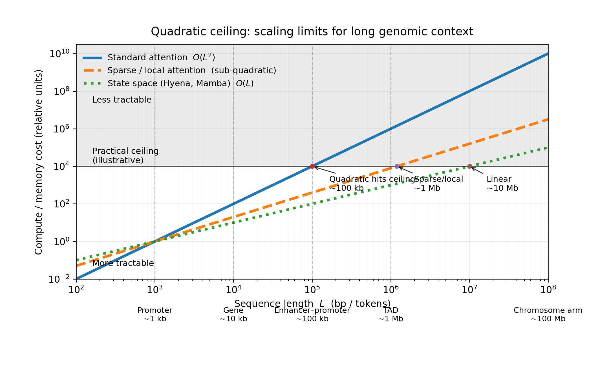
7.7.1 Quadratic Ceiling
The quadratic complexity of self-attention remains transformers’ most severe limitation for genomics. Computing all pairwise attention scores requires \(O(L^2)\) operations and memory. For genomic contexts exceeding \(100\) kilobases (roughly \(100{,}000\) single-nucleotide tokens), this becomes prohibitive. Even with sparse approximations and efficient implementations, transformers struggle at megabase scales where many regulatory interactions occur and structural variants manifest their effects.
Big-O notation describes how computational cost scales with input size. For genomic models, the input size L is typically sequence length. When we say attention has \(O(L^2)\) complexity, we mean that doubling the sequence length quadruples the computation: a 10,000 bp sequence requires 100 million pairwise comparisons. Sub-quadratic approaches like Hyena’s \(O(L \log L)\) scale far more gently: doubling the sequence length only slightly more than doubles the cost. For chromosome-scale sequences of millions of base pairs, this difference determines whether analysis is feasible at all.
Recent models have pushed context lengths substantially. Enformer handles 200 kilobases; emerging models approach 1 megabase. But these achievements rely on hybrid architectures with significant downsampling or hierarchical windowing that may miss certain long-range patterns or single-nucleotide resolution details. Pure transformers without such modifications remain limited to shorter contexts. The fundamental constraint shapes what questions transformers can address and motivates alternatives that escape quadratic scaling.
7.7.2 State Space Models
State space models (SSMs) address the quadratic barrier directly by achieving linear complexity while maintaining long-range modeling capability. Rather than computing all pairwise interactions, SSMs represent sequences as continuous-time dynamical systems, maintaining memory through recurrent state updates that propagate information across positions without explicit pairwise computation.
Architectures like S4, Hyena, and Mamba have demonstrated competitive or superior performance to transformers on various sequence modeling tasks while scaling to much longer contexts (Gu et al. 2022; Poli et al. 2023; Gu and Dao 2024). For genomics, this capability enables whole-chromosome or potentially whole-genome modeling that remains intractable for standard transformers. HyenaDNA processes sequences up to 1 million nucleotides at single-nucleotide resolution, enabling analysis of structural variants and long-range regulatory interactions that transformers cannot approach (Nguyen et al. 2023). The Evo model extends this further, achieving context lengths sufficient for bacterial genome-scale modeling (Nguyen et al. 2024). The DNA language model architectures in Chapter 14 examine HyenaDNA, Caduceus, and Evo in detail, exploring how linear complexity enables new categories of genomic analysis including sequence design applications (Chapter 30).
7.7.3 Choosing Architectures
The choice between transformers and alternatives depends on the biological question and computational constraints. Transformers excel when global context matters but sequences are not extremely long (under 10 to 50 kilobases depending on computational resources). Attention maps provide interpretability, showing which positions the model considers relevant for predictions. Transformers benefit from extensive tooling and pretrained models from NLP that transfer readily to genomics.
CNNs remain preferable when computational efficiency is paramount and local patterns dominate. For splice site prediction or promoter classification where relevant context spans at most a few hundred base pairs, a well-designed CNN may outperform transformers while using far fewer parameters. The inductive bias toward local patterns also regularizes against overfitting when training data is limited. The convolutional architectures examined in Chapter 6 established these design principles.
Hybrid approaches often achieve the best practical results for intermediate-scale problems. Models combining CNNs for local feature extraction with transformers for long-range integration outperform pure architectures on regulatory prediction tasks, as Chapter 16 demonstrates with Enformer and related models. The optimal combination depends on the specific biological question and the scale of relevant interactions.
The transition toward sub-quadratic architectures continues. Early results suggest SSMs match or exceed transformers on some genomic benchmarks while scaling to longer contexts. The question is no longer whether alternatives to quadratic attention exist, but which tasks benefit most from linear-complexity architectures and which retain advantages from explicit pairwise attention computation.
You are developing a model for a specific genomic task. For each scenario below, which architecture would you choose and why?
Predicting pathogenicity of missense variants in a 300-amino-acid protein domain. Context is ~900 bp, and you need rich bidirectional representations.
Generating novel regulatory sequences that drive tissue-specific expression. You need to sample from a learned distribution of functional sequences.
Predicting the effects of a 2 Mb structural variant on nearby gene expression. The variant spans multiple genes and regulatory elements.
Real-time variant annotation in a clinical setting where inference speed matters and context is limited to the immediate gene region.
Consider the tradeoffs between context length, computational cost, generation vs. representation, and interpretability for each case.
7.8 Capacity Without Direction
The transformer architecture provides the computational substrate for modern genomic foundation models, but architecture alone does not determine what models learn. Attention mechanisms enable pairwise interaction modeling across arbitrary sequence distances. Position encodings break permutation invariance to preserve the sequential structure essential to regulatory grammar. Stacked blocks build hierarchical representations through iterative refinement. These components create capacity; training objectives and data determine how that capacity is used.
Self-supervised pretraining transforms architectural capacity into biological knowledge. Masked language modeling teaches models to predict held-out tokens from context, implicitly learning the sequence patterns and evolutionary constraints that determine biological function. Next-token prediction in autoregressive models captures sequential dependencies required for sequence generation. Applied to massive genomic datasets, these objectives enable transformers to learn representations that transfer across diverse downstream tasks without task-specific supervision. Foundation models like DNABERT for regulatory sequence, ESM-2 for proteins, and Enformer for expression prediction each demonstrate that transformers trained on biological sequence capture patterns that generalize beyond their training objectives. The pretraining objectives that shape these learned representations are examined in Chapter 8.
Attention introduced a paradigm shift in how genomic models access context. Where convolutional networks aggregate local information through hierarchical composition, attention enables direct communication between any two positions regardless of distance. The computational challenge shifts from extending receptive fields to managing the quadratic complexity of pairwise attention. State space models and linear attention variants address this bottleneck while maintaining long-range capability, and whether these alternatives ultimately complement or displace standard transformers remains an open question. What is clear is that attention-based architectures have become the default substrate for genomic foundation models, with the pretraining objectives examined in Chapter 8 determining what biological knowledge they acquire.
Core Concepts:
- Self-attention computes pairwise interactions between all sequence positions, enabling direct modeling of long-range dependencies that convolutions cannot capture
- The query-key-value mechanism separates “what to look for” (query-key matching) from “what to send” (values), providing flexible information routing
- Multi-head attention allows parallel specialization: different heads learn to track local motifs, periodic spacing, long-range interactions, and motif-specific patterns
- Positional encodings break permutation invariance; relative encodings (ALiBi, RoPE) often outperform absolute encodings for length generalization
Architectural Variants:
- Encoder-only (bidirectional): Best for variant effect prediction, classification, embeddings
- Decoder-only (causal): Required for sequence generation and design
- Hybrid CNN-Transformer: Combines local pattern detection with long-range integration
Key Limitations:
- Quadratic complexity (\(O(L^2)\)) limits practical context to ~10-50 kb for standard transformers
- State space models (HyenaDNA, Mamba, Evo) achieve linear complexity for megabase-scale contexts
- The choice of architecture encodes assumptions about what biological relationships matter
Looking Ahead: Chapter 8 examines how self-supervised objectives (masked language modeling, next-token prediction, contrastive learning) transform architectural capacity into biological knowledge. The specific pretraining strategy determines what patterns the model learns and what downstream tasks it can address.